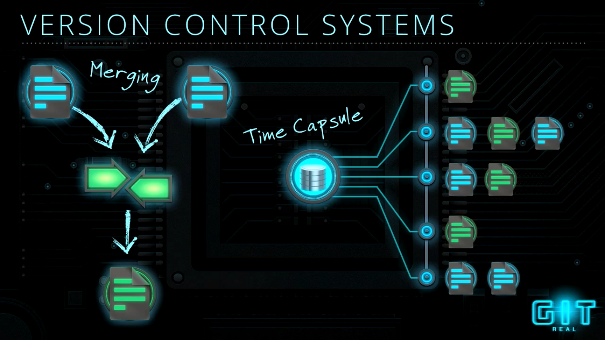

- What are version control systems?
- Why use vcs?
- Intro to Git
- Why Git?
- Git shell and Github demo
Final DOC
Final DOC

After 2-3 months you will forget where your files are.
:ARTICLE: larger
It's because we didn't know about version control systems.
Version Control Systems
Version Control Systems
- Avoid You From Creating Multiple Backups Of Your Files
- Multiple People Can Work On Same File
- Tracks The Changes Of The Files
- Switch Older Or Newer Versions Easily

What is GIT?
What is GIT?
Distributed Version Control System ( DVCS )

Installation
Installation
For unix based systems:
#For dpkg based linux distros sudo apt install git-core #For pacman based linux sudo pacman -S git #For rpm based sudo yum install git #for Mac OS brew install git
For Windows Based Systems:
www.git-scm.com/downloads